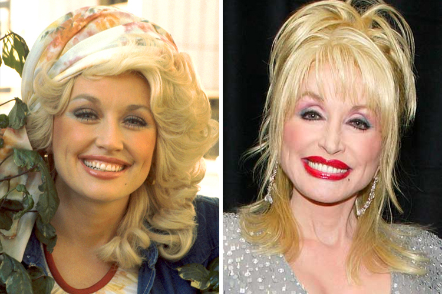

Shocking Examples of Celebrity Plastic Surgery Gone Wrong
by Shocking Examples of Celebrity Plastic Surgery Gone Wrong
Last Updated - 5 Days Ago

In today’s day and age, it seems like just about everyone has had some kind of plastic surgery. Popular versions are breast implants, tummy tucks, face lifts and rhinoplasty. When things go well, you never hear about it. That’s the whole idea, after all. The results are so polished and perfect that no one even knows a surgeon was there. Unfortunately, when you have a case of plastic surgery gone wrong, the exact opposite occurs. It’s not only obvious, it’s practically impossible to ignore. So let’s take a look at some of the most astonishing examples from Plasticsurgerytalks.com’s new series Botched and let them be a lesson to you about what can go wrong when you’re trying to look perfect.
The Human Doll
Here’s a classic case of too much of a good thing—or at least something you wanted to be a good thing. But in this case, the man behind the plastic was actually quite taken with his own results. On Botched! he is recognized solely as Justin, but who could remember a name any way when looking at a man who has had—get this—132 plastic surgeries. One more time, that’s 132 plastic surgery operations. It gets worse, though, as Justin was hoping to make 133 when he appeared on the program. This time the plastic surgery enthusiast was ready to get abs of steel he had perfectly designed. That’s the right way to put it too because Justin looks at his surgeries as parts of an art project. He has been meticulously working his way to a finished result, but admits that he’d change it all in a heartbeat if others followed suit and he didn’t stick out.
The Uniboob
The body part in question here is probably pretty self-explanatory, but it deserves referencing because it is probably the definition of plastic surgery gone wrong. In this case a woman named Alicia went in for one of the more common types of surgery we mentioned earlier: breast augmentation. In Alicia’s case, she wanted to get breast implants because she was feeling self-conscious after the birth of her son. Unfortunately, what followed was the last thing she wanted for her self-esteem: namely, a uniboob. It pretty much sounds like exactly what it is. Instead of two normal breast implants, she ended up with one. According to the star of the show, Dr. Dubrow, the implants were actually so big that they were able to connect and eventually fuse into becoming one. So while the initial surgery was a success, the aftermath gave her anything but desired results. Fortunately, despite the extreme difficulty involved, Dr. Dubrow was able to salvage the surgery and give Alicia the chest she had always wanted.
No Nose
Sadly for a woman named Michelle, she ended up in Dr. Dubrow’s office not because of the car accident she had been in years earlier, but because of the nose job—and subsequent ones following it—she had hoped would hide the original damage. It all began with a terrible car accident that, amongst other things, actually collapsed the poor woman’s nose. Literally, it smashed her nose flat against her face. Unfortunately, the first one was a bust as were the following five she went under to try to fix it. If you’re doing the math, yes, she came on the show already with six botched nose jobs under her belt. Finally, she came to Dr. Dubrow for lucky number seven in the hopes that this would finally be the break—no pun intended—she needed.
Janice Dickinson
Anyone who watches enough reality TV knows about Janice Dickinson. She’s been a judge on America’s Next Top Model and was later a cast member on The Surreal Life. In between those two shows, she’s done plenty to grab the camera’s attention. However, her original claim to fame is the fact that Dickinson was the “world’s first supermodel.” Unfortunately, in order to maintain the appearance that made her famous, Dickinson has needed a lot of plastic surgery and apparently not all of it has been so great. She came on the show Botched because her breast implants needed a facelift. After all, they were 30 years old and in Hollywood that’s basically 65.
Baby Got (Bad) Back
One form of plastic surgery that has become more and more popular recently is butt implants. It’s mostly women who get it and simply want a larger, shapelier derrière. Unfortunately, the results sometimes get all the wrong forms of attention. That was the case with Renee. Her implants were so poorly done that you could actually make them out below the skin, grab them with your hand and turn them over. Obviously, that’s not a look anyone is going for. Unfortunately for Renee, she’s not a candidate for surgery at the moment because she suffers from body dysmorphic disorder, meaning her perception of how she looks is extremely flawed. Further plastic surgery would likely only exasperate the situation.
Kimber
Finally, there was Kimber, a woman who came on the program after she had been through two dozen different surgeries. She is a transgender woman who has become the first ever to sign a contract with an adult agency, so her looks were very important. All things considered, her requests were actually fairly tame, especially considering the line of work she’s in. Kimber came on the program looking for nothing more than a breast reduction, nose job and a labiaplasty. In the end, her new, streamlined physique was exactly what she had been looking for. Hopefully, her fans will agree it was a success. While there are some particularly bad examples of plastic surgery gone wrong, it’s important to realize how things can get this way. Always be sure to research your plastic surgeon thoroughly before going under the knife and, long before that, be certain that the surgery you’re asking for is really something you want. Buyer’s remorse is often the result of an impulsive purchase, but both are especially bad when we’re talking about plastic surgery.
Leave a Comment:
Search
Advertisement